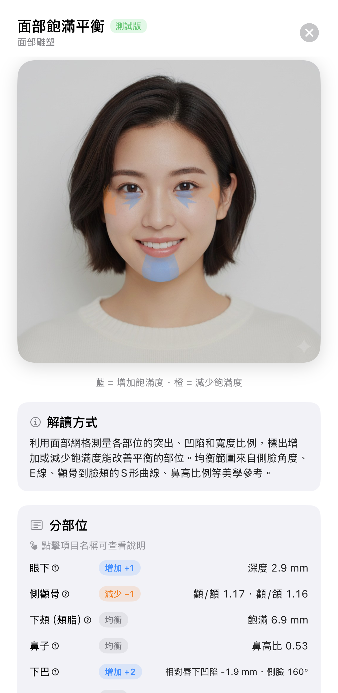
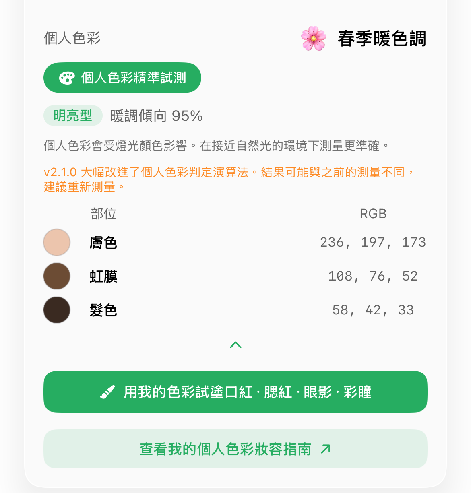
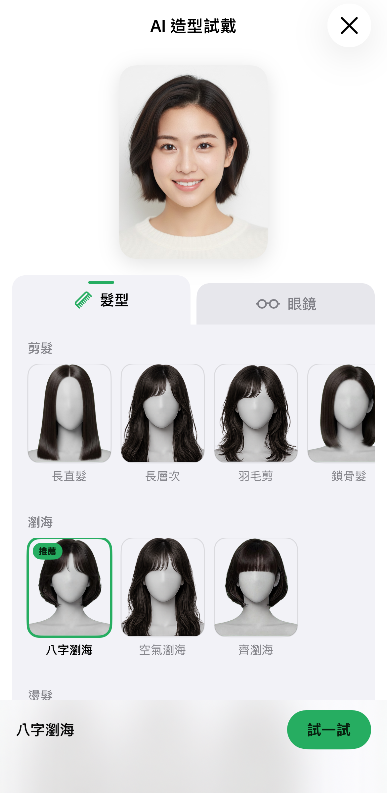
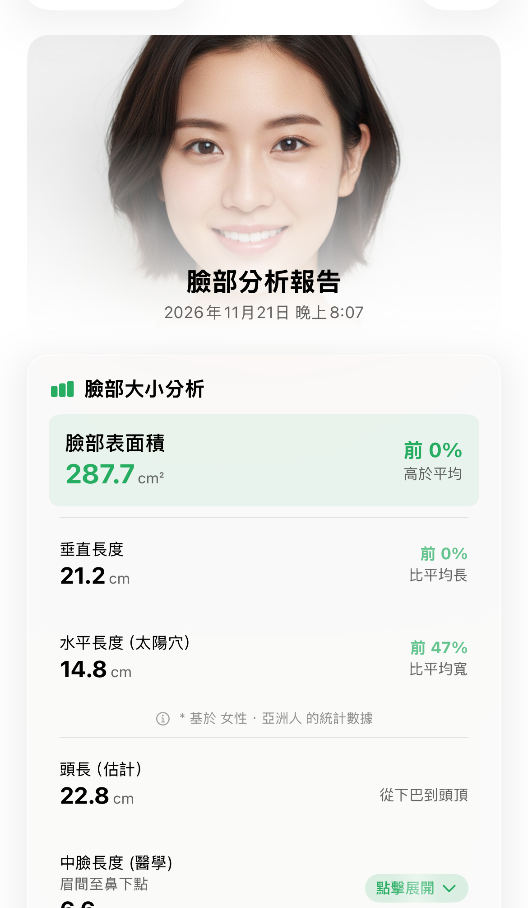
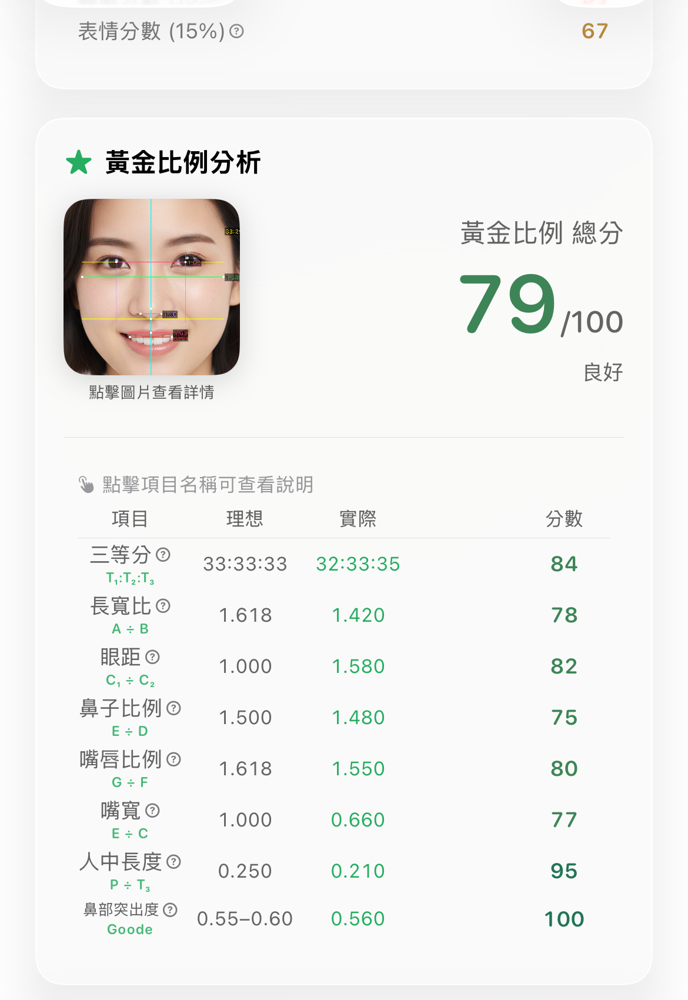
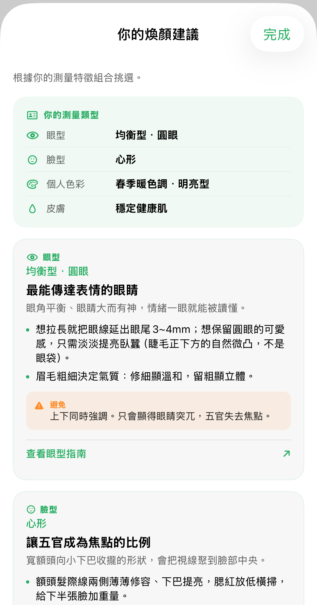
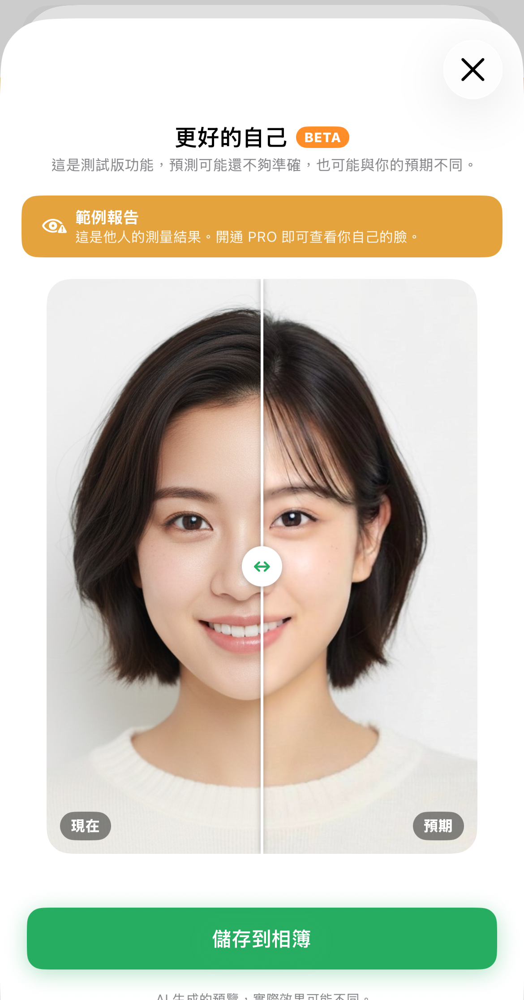

一句話介紹
可以直接用，也可以改。
Renka 是把臉做 3D 測量、用數字呈現的 App。
這個 App 和別的有什麼不同
別的 App 是把一張平面照片傳到 AI 伺服器，再把結果拿回來。
那是人用眼睛看也能下的判斷。
Renka 用的是手機上的面部 3D 測量（iPhone 用 Face ID 的深度鏡頭）。 不是把照片送出去，而是直接量臉的立體形狀。
所以能給出面積、長度、角度這些照片做不到的數值，而且測量在手機上就完成了。
如果你想講「這 App 有什麼不一樣」，重點就在這裡。
一個拍攝小建議：測量的過程本身就很好看。掃臉的畫面只有影片才能呈現，
而且不用解釋就證明了「是 3D 在測」。
最近新增 （2026 年 11 月更新）
這次更新裡新加入或變化最大的部分，歡迎優先介紹。
我的保養流程 （Pro · 11 月 17 日更新）
在皮膚測量結果上再加 5 個問題的回答，告訴你適合自己皮膚的推薦成分和早晚保養順序。每個成分都會寫明為什麼選、怎麼用（什麼時候用、多久一次），以及需要注意的地方。從 選單 ›「我的保養流程」，或詳細報告皮膚卡片裡的「查看完整流程」進入。也會提醒你持續 4 週左右再測一次做比較。
如果講這個：按 測量（皮膚狀態圖）→ 回答問題 → 我的保養流程 的順序串起來，就能看出它不是「測完就結束」，而是能告訴你「接下來該做什麼」。4 週後再測一次做比較，也很適合做續集。
請注意：不要保證某款產品的效果，也不要說成皮膚科處方，請介紹為「保養建議」。
皮膚分析 · 我的護膚優先順序
詳細報告裡的皮膚分析變得更完整了。在把紅色痘痘、色斑、泛紅用顏色疊在臉上的皮膚狀態圖之外，
新增了臉頰、額頭上大片色斑的單獨指標，還有一張根據測量結果按順序告訴你先護理什麼的「我的護膚優先順序」卡片。
11 月 17 日更新後，皮膚分析能更準確地區分頭髮和皮膚，以前漏掉的痘痘和痣也能測到了。
如果講這個：狀態圖一張就很有畫面感；如果在同一地點、同樣光線下隔幾天再測一次，展示前後變化最有說服力
（皮膚對光線很敏感，對比時請保持條件一致）。
請注意：不要說成皮膚科診斷，請介紹為「護膚參考」；也不要承諾任何保養品或療程的效果。
面部飽滿度分析 · 面部飽滿平衡 （測試版）

藍 = 增加飽滿度更平衡 · 橙 = 減少飽滿度更平衡 · 下方是分部位數值（範例報告畫面）
用 3D 面部網格，以毫米為單位測量額頭、太陽穴、眼下、蘋果肌、顴骨外側、下臉頰、鼻、唇、下巴、下頜線 10 個部位的突出和凹陷，
在臉上用地圖示出哪裡飽滿一點、哪裡收一點會更平衡，並給出每個部位用化妝修飾的建議。
如果講這個：「照片看不出的立體感，用數字量出來」—— 這是最能體現 Renka 不同之處的功能。
按「數值 → 化妝建議」的順序講會很自然；和皮膚分析放在一起，介紹成「立體（飽滿度）和表面（皮膚）都能測的 App」也很合適。
請只講化妝修飾，不要和醫美療程（填充、注射等）連結在一起。
彩妝試色 （免費）
把適合自己個人色彩的口紅、腮紅、眼影、彩瞳顏色直接疊到自己的照片上試。每個顏色都能調深淺，也能和原來的臉對比。
從 選單 › AI 造型試戴 › 「彩妝色彩」，或詳細報告裡的個人色彩進入。所有人免費。
如果講這個：個人色彩結果 → 試這個類型的顏色，連起來就能看出診斷真的派上了用場。
適合色和不適合色交替試的對比，反響通常也不錯。
個人色彩 8 種類型

像「春季暖色 · 明亮型」這樣細分為 8 種類型 —— 下方按鈕可以直接試色或開啟指南（範例報告畫面）
個人色彩結果會像「春季暖色 · 明亮型」「夏季柔和」這樣，以 8 種類型給出。點結果下方的「用我的色彩試塗口紅·腮紅·眼影·彩瞳」可以直接試色，
點「查看我的個人色彩妝容指南」可以看這個類型適合的顏色指南。
其他
- 美顏自拍 —— 可以從相簿一次選多張照片（最多 10 張），一鍵套用同一個妝容。
- 臉長 · 三庭 —— 也可以按髮際線或頭頂為基準來看。
- 臉型 —— 判定更準確了。
- 美顏自拍 —— 更快了，皮膚範圍也抓得更準。
- 測量提醒 —— 可以開啟通知，到該再測一次的時候提醒你。
上個月新增 （2026 年 10 月更新）
AI 造型試戴（髮型 · 眼鏡）

挑選髮型（剪髮·劉海·燙髮·髮色）和眼鏡，合成到自己的照片上 —— 適合臉型的款式會標「推薦」
用 AI 把新發型和眼鏡「穿」到自己的照片上，選好後幾秒就能看到逼真的預覽。
從測量結果畫面或選單進入；挑選人人可用，合成需要 Pro。
如果講這個：臉型分析 → 標「推薦」的款式 → 合成結果，連起來就能看出測量真的派上了用場。
其他
- 眼型·法令紋·黑眼圈數值 —— 眼尾角度、上眼瞼高度(MRD1)、眼瞼遮蓋、法令紋深度、黑眼圈指數，都會在詳細報告裡用數字呈現。
- 百日挑戰報告 —— 每 100 天收到一份報告：和上一階段的對比、全期間趨勢圖，以及 Rena 的 AI 摘要。可以先看範例報告。
- 美顏自拍 —— 即時美顏（皮膚·眼睛·鼻子）更自然，跟隨臉部也更穩定。
各功能的看點
順序沒有意義，挑感興趣的看就行。
面部大小

面部面積 287.7cm² · 縱向 21.2cm · 橫向 14.8cm（示範模特的數值）
大家說「臉大臉小」，量的通常是從下巴到頭頂 —— 這樣頭髮的厚度也算進去了。
Renka 量的是臉真正結束的位置，所以換髮型數值也不會變。
頭部長度 旁邊標著「估算」—— 那是推算值，不是實測值。
中面部長度
同一張臉有兩個標準：醫學（眉間→鼻下）6.6cm，美容（眼下→上唇）7.4cm。
App 裡可以切換，直接疊在自己臉上。
如果講這個：切換的時候線會動，不用解釋就能看出差別。也是一直以來反響最好的題材。
即時濾鏡裡也有同樣的功能（「醫學三等分」「美容三等分」），
把即時疊加的畫面和靜態報告放在一起，觀眾會更快理解。
浮腫
如果打算講這個：建議從體驗初期開始每天測一次。
浮腫是和你自己過去的測量值比較的，第一次測會顯示 0（因為還沒有基準值）。
積累幾天，到拍攝時就有「吃鹹了的第二天」這樣的對比了。
趕時間的話：拍攝前連續測幾次也能用 —— 從第二次開始就有對比。
只是同一天內變化小，效果不如積累幾天的明顯。
黃金比例

8 個項目的「理想值 vs 實際值」對照表
一個畫面的資訊量很大，很適合當結果畫面。
還有這些
臉型
也會給出鵝蛋臉、圓臉、方臉等臉型結果，並和適合臉型的髮型、眼鏡推薦連在一起。
如果講這個：接著展示上面的 AI 造型試戴或即時濾鏡的試戴功能會很順 ——
臉型 → 適合的髮型和眼鏡，個人色彩 → 適合的顏色（彩妝試色）。結果聽人說，不如看它疊在臉上來得直接。
即時濾鏡從測量完成後的畫面進入。（即時濾鏡沒有截圖，需要你自己錄製。）
不太建議把試戴單獨當主題 —— 像上面那樣搭配著展示比較好。
你的煥顏建議

按測得的類型(眼型·臉型·個人色彩·皮膚)組合出來的建議
把測量結果組合起來挑建議。比如「你的眼型是這樣，所以眼線畫到眼尾外 3〜4mm」——
會把從數值推出來的理由一起寫出來。入口在詳細報告最下方的按鈕。
如果講這個：測量畫面 → 結果數字 → 建議，連成一條線來看最清楚。
能用數字解釋「為什麼給我這條建議」，這一點會顯出來。
更好的自己 （測試版）

用滑桿比較現在 / 預期。畫面上有測試版標記和「AI 生成的預覽」提示
按建議做之後的樣子，用 AI 先畫出來。拖動中間的手柄左右滑動就能比較現在和預期，還能存成照片。
入口在煥顏建議頁面的最下方。
拜託一件事：請不要讓它看起來像醫美的效果。
這是靠髮型、妝容和日常護理改變的樣子，畫面上也有測試版和 AI 生成的提示。
拍攝時讓那行提示留在畫面裡，對我們幫助最大。
卡路里相機
拍食物就能看到熱量和營養資訊。不用付費就能用，食物識別在手機上完成。
如果講這個：很多人不知道臉部 App 裡還有這個，
容易出「這也行？」的反應。也請順便說明它是免費的。
Rena AI 諮詢
可以拿著測量結果和 AI 對話。
如果講這個：把自己的測量結果丟給 Rena 問「我適合什麼妝？」，對話過程本身就很有畫面。
觀眾看到的畫面可能和你不一樣
體驗碼開通的是 Pro 全部功能。普通使用者是這樣：
- 測量和基本結果、卡路里相機、彩妝試色 —— 免費
- AI 造型試戴 —— 挑選款式免費，合成需要 Pro
- 詳細報告（中面部、黃金比例、浮腫詳情、面部飽滿平衡、皮膚狀態圖·護膚優先順序、煥顏建議、更好的自己、百日報告等，上面截圖的大部分）—— Pro
- 我的保養流程 —— Pro（範例流程所有人都能看）
- 即時濾鏡 —— 每天有免費次數，更多需要 Pro
如果留言區有人問「為什麼我沒有這個畫面」，回答「詳細報告是 Pro 功能」就可以了。
App 裡的「範例報告」誰都可以先看。
測量在手機上完成。 不需要上傳照片到伺服器。
iPhone 和 Android 都可以用。 iPhone 用 Face ID 的深度鏡頭量 3D；Android 用相機的 AI 3D 臉部網格。
合作影片請標示業配：依平台規定使用「付費合作」標籤，或在文案加上 #ad / #業配。
關於分數：App 裡有些地方顯示 XX/100。想講「分數沒什麼用」這個角度
完全可以 —— 我們自己也是這麼說的。
只有一個請求：不要說成醫美效果或術前術後對比。
講「這個部位是這樣，看起來會是那樣」就好，不要講「怎麼改」。
話題（標籤）
必帶：#Renka3D —— 這一個請一定帶上。
我們靠它找到你的貼文和影片，也方便在官方帳號轉發和分享。
（只用 #Renka 會被其他內容淹沒，所以加了 3D。）
如果 經紀公司或合作平台另有指定的話題，請優先使用。
下面是其次推薦的話題，和指定的重複或者放不下的話可以省略（熱門話題會變，僅供參考）。
即使有指定，也請同時帶上 #Renka3D。
- 通用：#變美 #美妝 #保養 #自我提升 #變美日常
- 按題材：臉的大小 → #小臉 #臉型 ／ 中面部 → #三庭五眼 #中庭 ／
浮腫 → #消水腫 #水腫 ／ 色彩 → #個人色彩 #個人色彩診斷 ／ 彩妝 → #口紅試色 #妝容分享 ／
皮膚 → #膚況 #保養日常 #保養步驟 ／ 飽滿度 → #立體妝容 #修容 ／ 建議·預期臉 → #變美小技巧 ／
髮型·眼鏡 → #髮型推薦 #眼鏡推薦
- 請不要帶醫美類話題 —— 和上面的請求是同一個原因。
素材